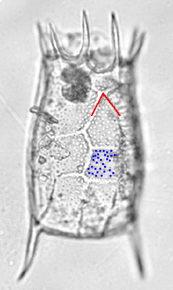
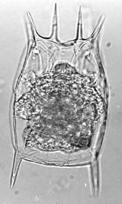

Click on the image which your specimen most closely resembles.
-
Choice 1 of 2

Pustules (p) present on lorica surface.The anterior horizontal ridge of anteromedial facet is short relative to the other sides of the facet, giving a distinctly triangular shape (t). Species: Keratella hiemalis -
Choice 2 of 2

No pustules present on lorica surface.The anterior horizontal ridge of anteromedial facet is about the same length as the other ridges of the facet giving a distinctly hexagonal shape. Species: Keratella testudo
Taxonomy
- Phylum
- Rotifera
- Class
- Monogononta
- Order
- Ploima
- Family
- Brachionidae
- Genus
- Keratella